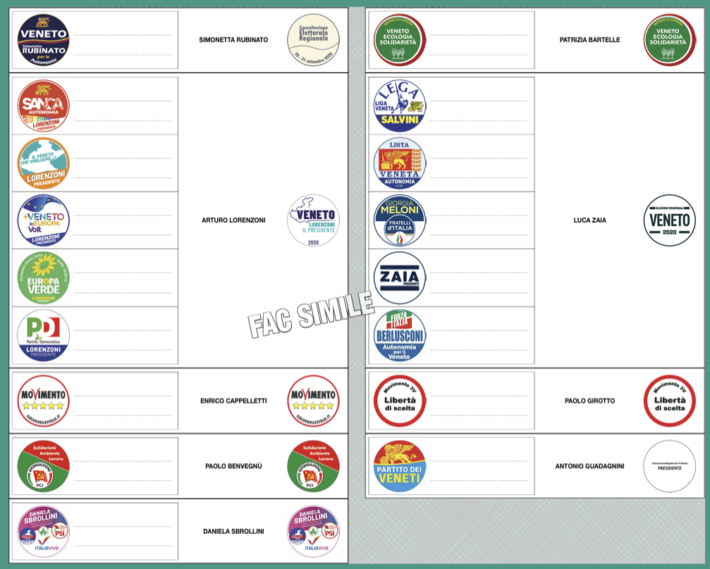

Quando si vota, come funziona la scheda (anche voto disgiunto), quanti seggi per provincia, chi fa cosa (Consiglio, Giunta, Presidente) e le competenze della Regione Veneto.
Domenica 23 e lunedì 24 novembre 2025
Porta con te: documento d’identità e tessera elettorale (duplicato in Comune se l’hai smarrita).
La scheda ha due spazi: uno per le liste provinciali e uno per i candidati Presidente.
Puoi scrivere una sola preferenza (nome del candidato consigliere). Se segni più liste, la parte “lista” è nulla.
Il Consiglio regionale ha 51 membri: 49 eletti nelle province + il Presidente eletto + il secondo classificato.
Chi ottiene più voti come Presidente diventa governatore. La sua coalizione riceve un premio di maggioranza per garantire la stabilità del governo regionale.
| Provincia | Seggi |
|---|---|
| Padova | 9 |
| Verona | 9 |
| Vicenza | 9 |
| Treviso | 8 |
| Venezia | 7 |
| Rovigo | 4 |
| Belluno | 3 |
Presidente — guida la Giunta e rappresenta la Regione. Nomina gli assessori.
Giunta — applica le leggi, gestisce la sanità, prepara piani e bilanci.
Consiglio regionale — fa le leggi, approva il bilancio e controlla la Giunta.
Lo Stato scrive le regole generali; la Regione organizza i servizi; i Comuni li gestiscono sul territorio.
Lo Stato fissa le regole generali (Costituzione e leggi-quadro), la Regione fa le leggi regionali e la programmazione su molte materie (es. sanità, TPL), i Comuni erogano i servizi quotidiani sul territorio.